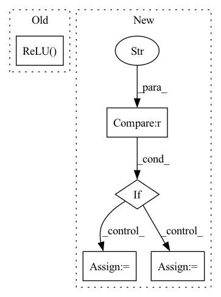

Pattern ID :461

Before Change
nn.Linear(200, 200),
//nn.Dropout(p=0.5),
//nn.Linear(200, 100),
nn.ReLU(),
nn.Linear(200, number_of_labels)
//nn.Linear(200, number_of_labels)
)
After Change
def __init__(self, number_of_labels, model_choice, embedding_size, dropout_layer, frozen):
super(CustomBERTModel, self).__init__()
if model_choice == "t5-3b":
tokenizer = T5Tokenizer.from_pretrained(model_choice, model_max_length=512)
model_encoding = T5EncoderModel.from_pretrained(model_choice)
embedding_size = 1024
self.encoderModel = model_encoding
else:
tokenizer = AutoTokenizer.from_pretrained(model_choice, model_max_length=512)
//attention_probs_dropout_prob=0.5)
//hidden_dropout_prob=0.5)
model_encoding = AutoModel.from_pretrained(model_choice)
embedding_size = 768
self.encoderModel = model_encoding
In pattern: SUPERPATTERN
Frequency: 3
Non-data size: 5
Instances
Fragment ID: 1086480
Project Name: allenai/embeddingrecycling
Commit Name: e8f2ce21388322a4ea20ce43cd214ed12c49e8fd
Time: 2022-03-15
Author: jonsaadfalcon@gmail.com
File Name: General_BiLSTM+LinearClassifer.py
Class Name: CustomBERTModel
Method Name: __init__
Parent Class: nn.Module
Fragment ID: 1086512
Project Name: kwea123/coordinate-mlps
Commit Name: 08f1c38dbeb74fdee69bde97d075cedf5218871c
Time: 2022-05-01
Author: kwea123@gmail.com
File Name: models.py
Class Name: MLP
Method Name: __init__
Parent Class: nn.Module
Fragment ID: 1086459
Project Name: lehduong/knowledge-distillation-by-replacing-cheap-conv
Commit Name: c21fd1d675f1df0d076e4efb312e30a15dc1c6ba
Time: 2020-03-10
Author: oopsxilitol@gmail.com
File Name: models/cifar_models/resnet.py
Class Name: BasicBlock
Method Name: __init__
Parent Class: nn.Module